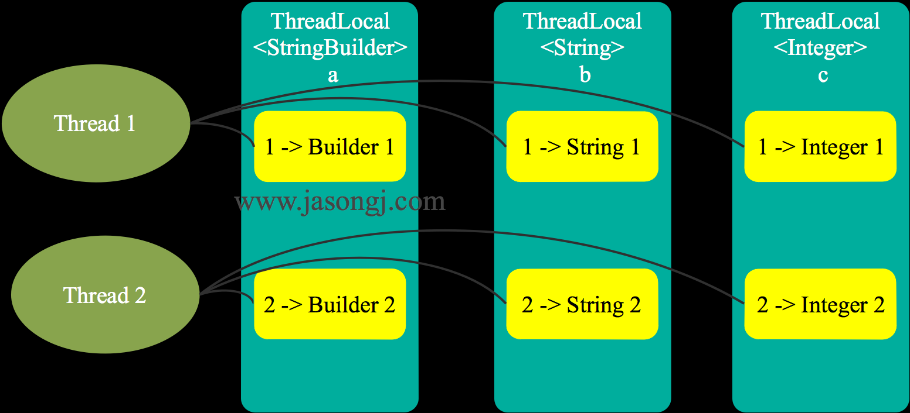
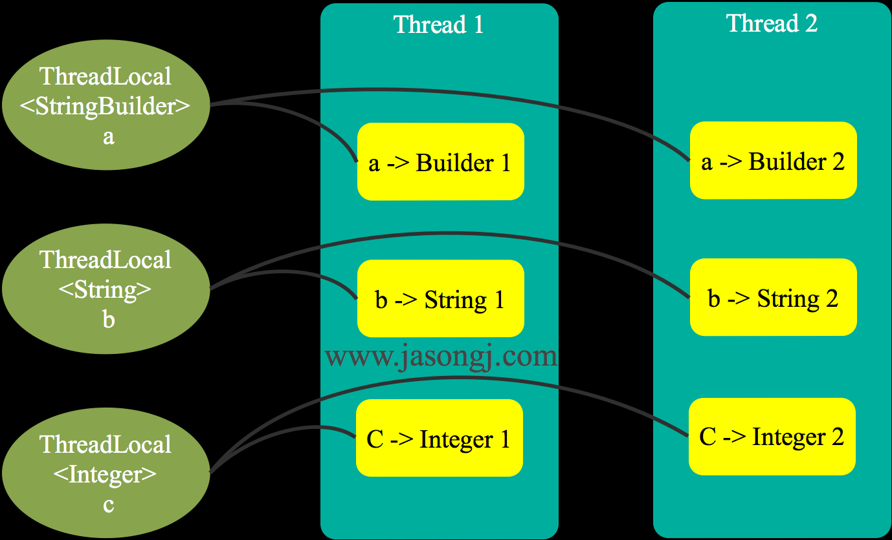

ThreadLocal解决什么问题
由于 ThreadLocal 支持范型，如 ThreadLocal< StringBuilder >，为表述方便，后文用 变量 代表 ThreadLocal 本身，而用 实例 代表具体类型（如 StringBuidler ）的实例。
不恰当的理解
写这篇文章的一个原因在于，网上很多博客关于 ThreadLocal 的适用场景以及解决的问题，描述的并不清楚，甚至是错的。下面是常见的对于 ThreadLocal的介绍
ThreadLocal为解决多线程程序的并发问题提供了一种新的思路
ThreadLocal的目的是为了解决多线程访问资源时的共享问题
还有很多文章在对比 ThreadLocal 与 synchronize 的异同。既然是作比较，那应该是认为这两者解决相同或类似的问题。
上面的描述，问题在于，ThreadLocal 并不解决多线程 共享 变量的问题。既然变量不共享，那就更谈不上同步的问题。
合理的理解
ThreadLoal 变量，它的基本原理是，同一个 ThreadLocal 所包含的对象（对ThreadLocal< String >而言即为 String 类型变量），在不同的 Thread 中有不同的副本（实际是不同的实例，后文会详细阐述）。这里有几点需要注意
- 因为每个 Thread 内有自己的实例副本，且该副本只能由当前 Thread 使用。这是也是 ThreadLocal 命名的由来
- 既然每个 Thread 有自己的实例副本，且其它 Thread 不可访问，那就不存在多线程间共享的问题
- 既无共享，何来同步问题，又何来解决同步问题一说？
那 ThreadLocal 到底解决了什么问题，又适用于什么样的场景？
This class provides thread-local variables. These variables differ from their normal counterparts in that each thread that accesses one (via its get or set method) has its own, independently initialized copy of the variable. ThreadLocal instances are typically private static fields in classes that wish to associate state with a thread (e.g., a user ID or Transaction ID).
Each thread holds an implicit reference to its copy of a thread-local variable as long as the thread is alive and the ThreadLocal instance is accessible; after a thread goes away, all of its copies of thread-local instances are subject to garbage collection (unless other references to these copies exist).
核心意思是
ThreadLocal 提供了线程本地的实例。它与普通变量的区别在于，每个使用该变量的线程都会初始化一个完全独立的实例副本。ThreadLocal 变量通常被
private static修饰。当一个线程结束时，它所使用的所有 ThreadLocal 相对的实例副本都可被回收。
总的来说，ThreadLocal 适用于每个线程需要自己独立的实例且该实例需要在多个方法中被使用，也即变量在线程间隔离而在方法或类间共享的场景。后文会通过实例详细阐述该观点。另外，该场景下，并非必须使用 ThreadLocal ，其它方式完全可以实现同样的效果，只是 ThreadLocal 使得实现更简洁。
ThreadLocal用法
实例代码
下面通过如下代码说明 ThreadLocal 的使用方式
1 | public class ThreadLocalDemo { |
实例分析
ThreadLocal本身支持范型。该例使用了 StringBuilder 类型的 ThreadLocal 变量。可通过 ThreadLocal 的 get() 方法读取 StringBuidler 实例，也可通过 set(T t) 方法设置 StringBuilder。
上述代码执行结果如下
1 | Thread name:thread - 1 , ThreadLocal hashcode:372282300, Instance hashcode:418873098, Value:0 |
从上面的输出可看出
- 从第1-3行输出可见，每个线程通过 ThreadLocal 的 get() 方法拿到的是不同的 StringBuilder 实例
- 第1-3行输出表明，每个线程所访问到的是同一个 ThreadLocal 变量
- 从7、12、13行输出以及第30行代码可见，虽然从代码上都是对 Counter 类的静态 counter 字段进行 get() 得到 StringBuilder 实例并追加字符串，但是这并不会将所有线程追加的字符串都放进同一个 StringBuilder 中，而是每个线程将字符串追加进各自的 StringBuidler 实例内
- 对比第1行与第15行输出并结合第38行代码可知，使用 set(T t) 方法后，ThreadLocal 变量所指向的 StringBuilder 实例被替换
ThreadLocal原理
ThreadLocal维护线程与实例的映射
既然每个访问 ThreadLocal 变量的线程都有自己的一个“本地”实例副本。一个可能的方案是 ThreadLocal 维护一个 Map，键是 Thread，值是它在该 Thread 内的实例。线程通过该 ThreadLocal 的 get() 方案获取实例时，只需要以线程为键，从 Map 中找出对应的实例即可。该方案如下图所示
]
该方案可满足上文提到的每个线程内一个独立备份的要求。每个新线程访问该 ThreadLocal 时，需要向 Map 中添加一个映射，而每个线程结束时，应该清除该映射。这里就有两个问题：
- 增加线程与减少线程均需要写 Map，故需保证该 Map 线程安全。虽然从ConcurrentHashMap的演进看Java多线程核心技术一文介绍了几种实现线程安全 Map 的方式，但它或多或少都需要锁来保证线程的安全性
- 线程结束时，需要保证它所访问的所有 ThreadLocal 中对应的映射均删除，否则可能会引起内存泄漏。（后文会介绍避免内存泄漏的方法）
其中锁的问题，是 JDK 未采用该方案的一个原因。
Thread维护ThreadLocal与实例的映射
上述方案中，出现锁的问题，原因在于多线程访问同一个 Map。如果该 Map 由 Thread 维护，从而使得每个 Thread 只访问自己的 Map，那就不存在多线程写的问题，也就不需要锁。该方案如下图所示。
]
该方案虽然没有锁的问题，但是由于每个线程访问某 ThreadLocal 变量后，都会在自己的 Map 内维护该 ThreadLocal 变量与具体实例的映射，如果不删除这些引用（映射），则这些 ThreadLocal 不能被回收，可能会造成内存泄漏。后文会介绍 JDK 如何解决该问题。
ThreadLocal 在 JDK 8 中的实现
ThreadLocalMap与内存泄漏
该方案中，Map 由 ThreadLocal 类的静态内部类 ThreadLocalMap 提供。该类的实例维护某个 ThreadLocal 与具体实例的映射。与 HashMap 不同的是，ThreadLocalMap 的每个 Entry 都是一个对 键 的弱引用，这一点从super(k)可看出。另外，每个 Entry 都包含了一个对 值 的强引用。
1 | static class Entry extends WeakReference<ThreadLocal<?>> { |
使用弱引用的原因在于，当没有强引用指向 ThreadLocal 变量时，它可被回收，从而避免上文所述 ThreadLocal 不能被回收而造成的内存泄漏的问题。
但是，这里又可能出现另外一种内存泄漏的问题。ThreadLocalMap 维护 ThreadLocal 变量与具体实例的映射，当 ThreadLocal 变量被回收后，该映射的键变为 null，该 Entry 无法被移除。从而使得实例被该 Entry 引用而无法被回收造成内存泄漏。
注：Entry虽然是弱引用，但它是 ThreadLocal 类型的弱引用（也即上文所述它是对 键 的弱引用），而非具体实例的的弱引用，所以无法避免具体实例相关的内存泄漏。
读取实例
读取实例方法如下所示
1 | public T get() { |
读取实例时，线程首先通过getMap(t)方法获取自身的 ThreadLocalMap。从如下该方法的定义可见，该 ThreadLocalMap 的实例是 Thread 类的一个字段，即由 Thread 维护 ThreadLocal 对象与具体实例的映射，这一点与上文分析一致。
1 | ThreadLocalMap getMap(Thread t) { |
获取到 ThreadLocalMap 后，通过map.getEntry(this)(this 指的是 ThreadLocal类对象)方法获取该 ThreadLocal 在当前线程的 ThreadLocalMap 中对应的 Entry。该方法中的 this 即当前访问的 ThreadLocal 对象。
如果获取到的 Entry 不为 null，从 Entry 中取出值即为所需访问的本线程对应的实例。如果获取到的 Entry 为 null，则通过setInitialValue()方法设置该 ThreadLocal 变量在该线程中对应的具体实例的初始值。
设置初始值
设置初始值方法如下
1 | private T setInitialValue() { |
该方法为 private 方法，无法被重载。
首先，通过initialValue()方法获取初始值。该方法为 public 方法，且默认返回 null。所以典型用法中常常重载该方法。上例中即在内部匿名类中将其重载。
然后拿到该线程对应的 ThreadLocalMap 对象，若该对象不为 null，则直接将该 ThreadLocal 对象与对应实例初始值的映射添加进该线程的 ThreadLocalMap中。若为 null，则先创建该 ThreadLocalMap 对象再将映射添加其中。
这里并不需要考虑 ThreadLocalMap 的线程安全问题。因为每个线程有且只有一个 ThreadLocalMap 对象，并且只有该线程自己可以访问它，其它线程不会访问该 ThreadLocalMap，也即该对象不会在多个线程中共享，也就不存在线程安全的问题。
设置实例
除了通过initialValue()方法设置实例的初始值，还可通过 set 方法设置线程内实例的值，如下所示。
1 | public void set(T value) { |
该方法先获取该线程的 ThreadLocalMap 对象，然后直接将 ThreadLocal 对象（即代码中的 this）与目标实例的映射添加进 ThreadLocalMap 中。当然，如果映射已经存在，就直接覆盖。另外，如果获取到的 ThreadLocalMap 为 null，则先创建该 ThreadLocalMap 对象。
防止内存泄漏
对于已经不再被使用且已被回收的 ThreadLocal 对象，它在每个线程内对应的实例由于被线程的 ThreadLocalMap 的 Entry 强引用，无法被回收，可能会造成内存泄漏。
ThreadLocal对象是弱引用，可以被回收，但是ThreadLocalMap的Entry可能会存在内存泄漏问题.
针对该问题，ThreadLocalMap 的 set 方法中，通过 replaceStaleEntry 方法将所有键为 null 的 Entry 的值设置为 null，从而使得该值可被回收。另外，会在 rehash 方法中通过 expungeStaleEntry 方法将键和值为 null 的 Entry 设置为 null 从而使得该 Entry 可被回收。通过这种方式，ThreadLocal 可防止内存泄漏。
1 | private void set(ThreadLocal<?> key, Object value) { |
适用场景
如上文所述，ThreadLocal 适用于如下两种场景
- 每个线程需要有自己单独的实例
- 实例需要在多个方法中共享，但不希望被多线程共享
对于第一点，每个线程拥有自己实例，实现它的方式很多。例如可以在线程内部构建一个单独的实例。ThreadLocal 可以以非常方便的形式满足该需求。
对于第二点，可以在满足第一点（每个线程有自己的实例）的条件下，通过方法间引用传递的形式实现。ThreadLocal 使得代码耦合度更低，且实现更优雅。
案例
对于 Java Web 应用而言，Session 保存了很多信息。很多时候需要通过 Session 获取信息，有些时候又需要修改 Session 的信息。一方面，需要保证每个线程有自己单独的 Session 实例。另一方面，由于很多地方都需要操作 Session，存在多方法共享 Session 的需求。如果不使用 ThreadLocal，可以在每个线程内构建一个 Session实例，并将该实例在多个方法间传递，如下所示。
1 | public class SessionHandler { |
该方法是可以实现需求的。但是每个需要使用 Session 的地方，都需要显式传递 Session 对象，方法间耦合度较高。
这里使用 ThreadLocal 重新实现该功能如下所示。
1 | public class SessionHandler { |
使用 ThreadLocal 改造后的代码，不再需要在各个方法间传递 Session 对象，并且也非常轻松的保证了每个线程拥有自己独立的实例。
如果单看其中某一点，替代方法很多。比如可通过在线程内创建局部变量可实现每个线程有自己的实例，使用静态变量可实现变量在方法间的共享。但如果要同时满足变量在线程间的隔离与方法间的共享，ThreadLocal再合适不过。
总结
- ThreadLocal 并不解决线程间共享数据的问题
- ThreadLocal 通过隐式的在不同线程内创建独立实例副本避免了实例线程安全的问题
- 每个线程持有一个 Map 并维护了 ThreadLocal 对象与具体实例的映射，该 Map 由于只被持有它的线程访问，故不存在线程安全以及锁的问题
- ThreadLocalMap 的 Entry 对 ThreadLocal 的引用为弱引用，避免了 ThreadLocal 对象无法被回收的问题
- ThreadLocalMap 的 set 方法通过调用 replaceStaleEntry 方法回收键为 null 的 Entry 对象的值（即为具体实例）以及 Entry 对象本身从而防止内存泄漏
- ThreadLocal 适用于变量在线程间隔离且在方法间共享的场景